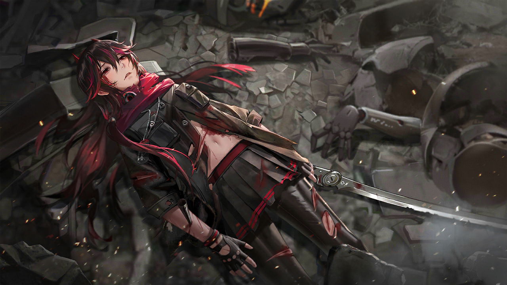
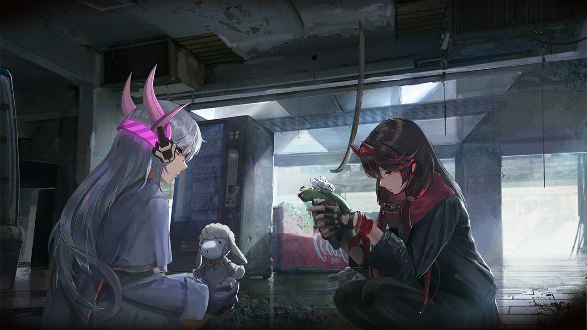
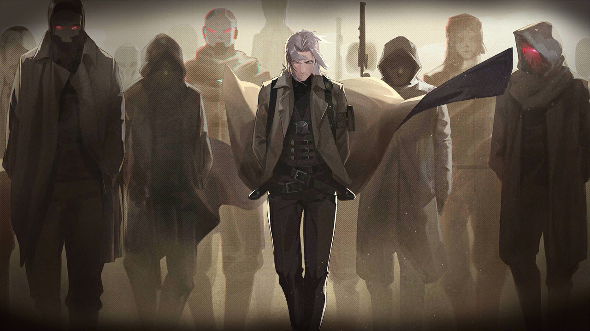
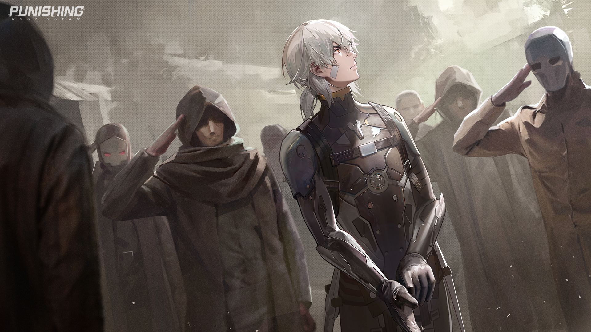
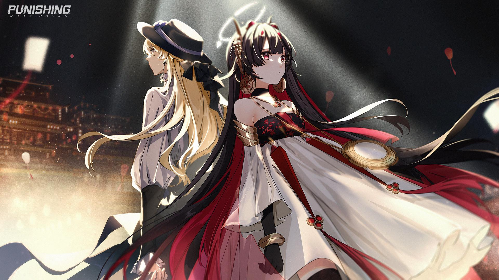
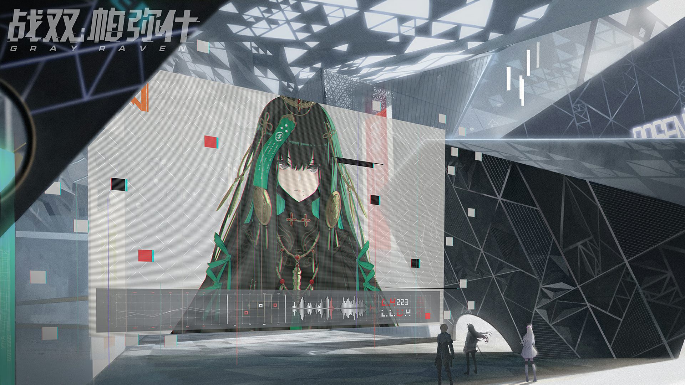
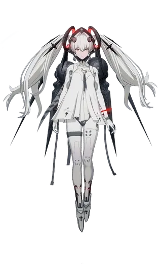

Punishing: Gray Raven (战双帕弥什) is an online, free-to-play 3D Chinese Action RPG for Android, iOS, and PC.
In the distant future, mankind's first zero-point energy nuclear reactor gives birth to a new type of virus in its vacuum chambers, known as "the Punishing". When it escapes and spreads along the wind currents of Earth's atmosphere following an explosion, the cybernetic pathogen proceeds to kill humans and infect machines, causing them to mindlessly seek to destroy anything with a human consciousness. Humanity thus sees no other option but to escape into space, where survivors live aboard the space colony Babylonia. To reclaim their lost planet, humans devise a way to modify their bodies into virus-resistant cyborg-like: the Reconstructed Soldiers, or in its short form, the constructs.
You are the commandant of a team of constructs: Gray Raven Squad. With them at your side, the counter-invasion of Earth will begin its next chapter.
At its core, Punishing is a high-speed action game in the vein of Devil May Cry or NieR: Automata, with the wrinkle of a Match-Three Game: As players land hits with default attacks, a queue begins randomly filling with one of three different types of special moves. If two or three prompts get joined together, the attack becomes much more powerful, and opens access to each character's unique passives.
Punishing Gray Raven is developed and published by Kuro Games using the Unity Engine and first released in December 2019. It was originally only available in Chinese through an official client, Bilibili and Taptap — the Taiwanese version was released in August 2020; the Japanese version was released in December 2020; and a Global version released in July 2021. In May 2023, a PC client version was launched, with English voicelines added two months later for the Global’s second anniversary.
In October 2020, a Super-Deformed The Anime of the Game, Panini: Gray Raven aired on BiliBili.
Punishing: Gray Raven has players control a squad of up to three characters, known as "Constructs", against various enemies. Storytelling is presented in a visual novel format, while combat is hack and slash action-based, with the player fighting enemies in real-time in various stages. During combat, different colored "Pings" can be obtained, which will fire off different skills. Chaining 3 Pings with the same color will execute a powerful version of that skill. Players may also evade enemy attacks, which will trigger a bullet time effect called Matrix upon successful evasion, slowing down time and allowing the player to land additional hits to the enemy or take better position along with giving next used orb temporarily ability to activate 3-ping version. Evading attacks will consume stamina, which prevents players from freely dodging all the time (visually stamina bar is dodge button's outline).
Constructs can be strengthened by leveling up and promoting them, as well as leveling weapons and equipping "memories" (which add pure stats to character, also majority of them have special effects upon equip 2, 4 and 6 pieces). Players can unlock additional Constructs by advancing the story, and more Constructs can be obtained via a gacha mechanic and in-game events. In-game currencies can be obtained through in-app purchases and playing the game, which are used to obtain Constructs and equipment through the gacha system. A pity system ensures that the player will receive rare items after a set number of pulls (60 or ~80-100, depends on banner type).
The game also features a housing system in the form of Dormitories. Players may decorate and move in Constructs to their dorms to improve their mood. Constructs can also be assigned chores to obtain in-game materials.
About Me
Nama: Muhammad Fathan Fadilah Ihsan
NIM: 10123217
Kelas: IF-6
Hello! My name is Muhammad Fathan Fadilah Ihsan, I'm a student of Indonesian Computer University, majoring Informatics Engineering. As to why I pursue this major, it's because since I was a kid I had already taking interest in things like game development. I thought it was interesting and cool to see the progress. Though I admit, it was kind of embarassing that I had interest in those stuffs but never get the initiative to start and learn more about programming. Tried learning a bit of programming in my middle school days (python) but i stopped in a couple weeks due to my laziness.
One of the reason why I chose this topic as my final project is because I love Punishing Gray Raven. The game is so addictive, offering some great stories from each character and an amazing gameplay that will keep reeling you into the game. Though it saddens me that this game didn't get as much recognition from other games, like Honkai Impact 3rd and Genshin Impact. So I feel like wanting to let more people know about this game through one of my project.
I started learning HTML since I started college. It was my first programming language that I love because of its simplicity. So, yeah, this is my biggest project yet as of now. Thank you for viewing my project.
Plot
The story of the game takes place in a post-apocalyptic world overrun by Corrupted cybernetic enemies caused by the Punishing Virus. The last remnants and survivors of mankind have escaped to the space station and stronghold Babylonia. The player takes on the role as the Commandant of an elite squad of Constructs known as Gray Raven. The player will lead the squad to fight against the Corrupted and other opposing forces to retake the planet.

00-Prologue
The Commandant of the Gray Ravens and a heavily injured Lucia find themselves surrounded by the Corrupted during their mission to retake City 015. Seeing that they are out of Anti-Punishing Serum, Lucia suggests they turn off her pain receptors to buy time for them to retreat, despite the risk of M.I.N.D. deviation.
The Commandant fights the Corrupted as they wait for Lucia to recalibrate. Lucia manages to come back in time to finish off the rest. At the same time, Liv, another member of the Gray Ravens who specializes in support, launches an attack against the enemies from afar.
Lucia becomes more and more aggressive in combat as she suffers from the symptoms of M.I.N.D. deviation. They take a short break before arriving at the ruins, where they are joined by Lee and Liv, the two other members of the Gray Ravens. Because of the damage they sustained during the mission, the team decides to first rendezvous with the nearest supply unit. They take a shortcut through a church, where Lucia feels a sense of déjà vu.
The team encounters a Construct-like figure at the church but soon realizes that she is not an ally when they sense a high concentration of Punishing Virus from her. Lucia in particular is severely affected upon encountering the mysterious figure: her sensor modules are unable to perceive the unknown Construct, and her M.I.N.D. starts to further destabilize. The Construct, labeled Alpha, challenges Lucia to a fight. Alpha nearly kills Lucia but is interrupted by the Commandant.
Alpha then redirects her attention to the Commandant. She immobilizes the Commandant with ease and asks them if they can understand what Lucia is currently going through. The Commandant’s determination convinces Alpha to let them go. Before leaving, Alpha tells Lucia that she looks forward to her choice once she sees humans for what they truly are.
01-Graffiti Art
The Gray Ravens remain puzzled as to why Alpha’s combat moves were similar to Lucia’s and how she could have affected Lucia’s M.I.N.D. Upon reaching the designated meeting point, they find the stronghold overtaken by the Corrupted.

Liv detects a distress signal from a survivor who claims that the Corrupted were drawn to the stronghold because of nearby graffiti. Lee’s analysis of the graffiti leads the team to a disturbing conclusion: the graffiti has been painted with a mixture of Construct fluids and other materials. Furthermore, the enemy has created a bomb using this pressurized “paint.” This suggests that the Corrupted are learning and evolving.
The Gray Ravens are then attacked by an unknown enemy who conceals itself using Construct parts and vital fluid. Liv’s scans reveal that the enemy—known as Nozzle—is a spray-painting robot corrupted by the Punishing Virus. With Celica’s help, the team follows the paint trail left behind by Nozzle.
The squad stops at an abandoned shop to take a break. Lucia and Liv pick up a frog and sheep plushie, respectively. Lucia remarks that the frog plushie fills her with a strange feeling.
When the Gray Ravens finally confront Nozzle, it contemplates why it must choose between humans and Ascendants before engaging in combat.
Upon its defeat, Nozzle reveals that it has been “enlightened” by a being called the “Sagemachina,” which led to its curious behavior of using graffiti as a mode of self-expression. The team retrieves Nozzle’s memory data and then returns to Babylonia.
While Lucia is undergoing repairs, the Commandant questions Asimov, the chief technology officer of Babylonia, regarding the abnormalities observed during Lucia’s fight with Alpha. Asimov, however, refuses to answer, and the Commandant is forced to leave upon being summoned by President Hassen. Hassen commends the Commandant on their performance and proceeds to discuss the information uncovered by studying Nozzle’s memory data.
02-Journey of Torture
The Gray Ravens are assigned to acquire more information on the Ascendants by defeating a special Corrupted nicknamed the “Iron Maiden.” As the team moves to deploy their Iso-Devices, the Commandant receives a connection request from a Construct named Tifa, who is supposedly the only survivor of the Suzaku squad.
Vera, the captain of the notorious Cerberus squad, contacts the Gray Ravens and reveals that Tifa is the Iron Maiden. After the death of her Commandant, Tifa was transformed into the Iron Maiden by some “power” given to her by an unknown enemy. Tifa’s power proves to be formidable enough that the Cerberus squad alone is unable to defeat her. The Gray Ravens eventually defeat her after a challenging battle, during which Lee takes an attack in Liv’s place.
After the battle, Captain Chrome of the Strike Hawk squad arrives to escort them to safety. A mysterious girl in white is seen watching the Gray Ravens leave on their transport craft. She laments that her sister has forgotten her.
03-Final Exhibition
During a mission to track down an Ascendant, Kamui unknowingly runs into Roland on his way to a museum estate and mistakes him for another Construct on a mission. The Gray Ravens, who are also tasked with locating an Ascendant, reach the estate as well.
Curiously, even though Kamui recognizes Lucia, she does not seem to remember who he is. Kamui briefly tells the Gray Ravens about the Ascendants and how they draw their power from a mysterious system called the Ascension Network.
The group fights their way through the estate’s defenses and eventually defeats the corrupted butler robot guarding the place. At that moment, Roland shows up and destroys a part of the building, isolating Kamui from the Gray Ravens. Roland reveals that his true target has been Kamui all along, and he infects him with the Virus.
Meanwhile, Chrome notices Kamui’s rising corruption level over his comms.

04-Forgotten Sand
The Gray Ravens reach Kamui while his infection threshold is still low enough, but not before Roland manages to slip away. Together, they escape the crumbling estate into the desert, and attempt to return to Babylonia, only to find their transport aircraft already destroyed by Roland. To make matters worse, a Corrupted bionic sandworm named Vassago suddenly emerges to attack them. It escapes underground before the group can deal the final blow.
The group encounters another unknown signal, which turns out to be Watanabe, the leader of an organization called the Forsaken. Watanabe used to be a Construct of Babylonia before defecting and creating the Forsaken for those who were abandoned by Babylonia during the Great Evacuation. Because of this, the relationship between Babylonia and the Forsaken remains strained even now. Watanabe recognizes Lucia, and Kamui mentions the three of them training together many years ago; Lucia, however, remembers none of it.
Watanabe gives the Commandant a box of mint leaves to “commemorate” their first meeting. This seemingly friendly gesture turns out to be a trap: Watanabe intentionally leads them into a large group of Corrupted and kidnaps Liv while the rest fight off the Corrupted. Furthermore, the scent of the mint leaves attracts Vassago once again. After a challenging battle, the Gray Ravens defeat Vassago.
05-Shattered Illusions
In their search for Liv, Lucia, Lee, and Kamui reach a former M.I.N.D. technology research facility. As they enter the building, they fall into another trap set by the Forsaken–an augmented reality created by electromagnetic projection devices inside the facility–and the Gray Ravens become separated from Kamui. The Gray Ravens manage to find their way out thanks to Lee using the mini graviton detector in the form of a pendant, given to him by his little brother Murray. They disable the devices by detonating an EMP grenade and reunite with Kamui.
Lee parses through a fallen Corrupted’s memory shell and discovers that an Ascendant named Gabriel has ordered the Corrupted in the facility to research the M.I.N.D. technology by taking Constructs’ consciousnesses and uploading them to “containers.” This discovery leads Lucia to question whether consciousness can be copied.
Based on the data, the group concludes that the consciousnesses stored in this facility must belong to the Forsaken and that they have kidnapped Liv because they need her help to restore the consciousness to their owners.
With the help of a cheerful and enigmatic girl named Nanami, the group reaches the Central Consciousness Container, where they find Watanabe and Liv. Watanabe tells them that Liv was able to save all the consciousness of the Forsaken. Her own consciousness, however, is still trapped inside the container.
The Commandant uses their Mind Beacon to link the Gray Ravens with Liv’s M.I.N.D. to save her.
Liv wakes up, and Watanabe thanks her for rescuing the Forsaken. He also apologizes for endangering Liv’s life and promises to assist the Gray Ravens in the future if they ever need him.
06-Alloy Contamination
At the Forsaken’s camp, the Gray Ravens prepare to head to a nearby city on a newly assigned mission. Watanabe and Kamui decide to join the Gray Ravens for the mission.
A mysterious figure inside Kamui’s mind talks to him during the group’s investigation of the city. The mysterious figure claims that he is helping Kamui stave off the Punishing Virus. He wants Kamui to accept him and let him take over his body.
Meanwhile, the group finds a factory that is being used to create more Corrupted. The Corrupted they encounter are slightly modified from their usual models, and Lucia wonders if the Punishing Virus is sentient enough to make these changes to their “designs." Nanami suddenly reappears and helps them fight the Corrupted. Nanami shows keen interest in the Commandant, whom she calls “the incarnation of the unfathomable.” As they proceed, Kamui’s condition deteriorates further until he runs away and turns off his comms without any explanation.
The group attempts to follow Kamui, but their path is quickly blocked by the Corrupted. In order to clear the path, the Gray Ravens and Watanabe decide to prioritize preventing more Corrputed from appearing by destroying the factory using explosives. Nanami once again helps the group, although her true nature and motives remain mysterious.
Right before the explosives go off, the group encounters a Corrupted nun-robot who calls Lucia by her name. Lucia seems to recognize the robot, but they are forced to make their escape as the explosives start detonating, with Nanami and Watanabe taking a different route.
The Gray Ravens manage to reach Kamui, only to find Vera attempting to execute him. Lee calls in a favor from her to have her let Kamui go, but Bianca from the Purifying Forces is sent to purge any defectors or corrupted Constructs. Lucia tries to help Kamui escape, albeit unsuccessfully, and Chrome intervenes at the last minute to delay Kamui’s execution.
07-Inver Collapse
Chrome convinces Bianca to give Kamui a chance while he reports to Babylonia regarding Kamui and “Tenebrion.” Chrome argues that Kamui has not yet shown signs of corruption and has kept his consciousness intact. Bianca agrees to delay the execution until she locates him, despite her partner Karenina’s objections.
The Gray Ravens join the search for Kamui. They follow Kamui’s trail into some ruins but find their path blocked, drawing Karenina’s ire. Nanami suddenly appears with her robot companion, Rohacchi, who has been awakened by a mural created by the Sagemachina, and offers to help.
During the group’s conversation with Nanami and Rohacchi, Bianca realizes that Karenina has run off on her own to find Kamui. Bianca and the Gray Ravens find Karenina in a dire state, her M.I.N.D. overheated by a form of unknown energy. To prevent the energy from doing any more damage to her M.I.N.D., Liv and Lucia manually put Karenina’s frame to sleep.
After they rescue Karenina, Roland, who has been after Kamui all along, appears in front of the group. With the help of Watanabe and Bianca, the Gray Ravens defeat Roland, but he manages to escape at the last moment.
08-Consumed by Darkness
Commander Nikola and President Hassen disagree on what the Gray Ravens should do regarding Kamui’s fate: Nikola wants the Gray Ravens to retreat, but Hassen insists on having them find Kamui, as Kamui has displayed the ability to potentially fight the Punishing Virus.
Following Hassen's orders, the Gray Ravens fight through the hordes of the Corrupted sent by Roland to slow them down. Among the Corrupted are the copies of Nozzle, the Butler, and the Iron Maiden. The Gray Ravens are forced to split up with Bianca when the Iron Maiden temporarily takes control of Lee, using the injury the original Iron Maiden had inflicted on him during their previous battle.
The Gray Ravens eventually defeat all the Corrupted and reunite with Bianca. Together, they find Kamui in a chamber filled with “Tenebrion," the mysterious energy that caused Karenina’s M.I.N.D. to overheat. Bianca questions whether Kamui really is stable.
Vera also arrives with orders to execute Kamui. Lucia insists on giving them more time to assess if Kamui poses a real threat. Vera fights the Gray Ravens but eventually backs down after her defeat, citing the “promise” she made to Lee from the favor he called in.
Meanwhile, Kamui fights a being named Camu—the other consciousness that has been inside him all this time—inside his own M.I.N.D. Camu attempts to destroy Kamui and take over the body for himself.
The Gray Ravens are determined to save Kamui. When they notice the density of the Punishing Virus dropping, they establish a connection to Kamui’s M.I.N.D.
The Gray Ravens defeat Camu inside Kamui’s M.I.N.D. Camu and Kamui eventually come to an agreement. They recognize that although they are the same being, they each have their weaknesses; however, Kamui no longer needs Camu’s constant protection because now he has his companions to help him.
Kamui finally returns to his normal self, and everyone is relieved. Unfortunately, the relief is short-lived as Liv receives a message that Babylonia is under attack by the corrupted International Space Station.
09-Fallen Star
The Gray Ravens head to the corrupted International Space Station as a part of Babylonia’s large-scale operation to eliminate its threat once and for all. Hassen tasks Karenina with operating a “secret weapon” capable of destroying the space station once the ground forces expose its weak point. Setting aside the ongoing tension between Babylonia and the Forsaken, Watanabe joins the operation as well, since the space station has been directing its attacks towards Earth in addition to Babylonia, and he believes that the battle will be a turning point in the war against the Punishing Virus.
After the Gray Ravens depart, Hassen is visited by Allen, the president of WGAA. Allen convinces Hassen to send Ayla on a mission to retrieve a Construct named Selena. Years ago, Selena supposedly perished in a disastrous investigation of the space station; however, having recently deciphered a signal from Selena, Ayla believes that her friend may still be alive inside the station, and is determined to bring her back. Hassen enlists the help of Watanabe to safely escort Ayla to the space station. On the spacecraft, Ayla and Watanabe both express their interest in the Gray Ravens and their Commandant.
The Gray Ravens succeed in their initial goal of disabling the station’s defense system and continue their investigation. Their investigation comes to a temporary halt when they find their way to the control center blocked. Watanabe flies his spacecraft through the corridors of the space station, clearing the obstacles. Watanabe temporarily joins the Gray Ravens in their mission, and when questioned about his motive for doing so, he reveals that there is an Ascendant already present at the space station. Said Ascendant is Gabriel, who is instructed by Luna to avoid fighting the Gray Ravens.
Suddenly, the space station starts to dislodge its compartments into space. Watanabe compares it to a living organism’s immune system: because the Gray Ravens have destroyed the station’s observation room and weapon control system, allowing other Babylonian troops to land, it is attempting to expel the intruders by self-destructing. Liv attempts to hack into the space station’s main system to stop its self-destruction. Watanabe offers to help buy more time by allowing her to connect to his frame in addition to the other members of the Gray Ravens. The team decides to trust him, and their efforts result in successfully locking the remaining cabins to their positions, preventing further disintegration of the space station.
The events leading up to the current state of the space station are revealed through a copy of the station’s data log: when the station’s gravity core was corrupted, it continued to attract nearby Punishing Virus, resulting in the creation of a high-density condensation of the Virus, named Punishing Heteromer. Based on this information, the Gray Ravens make their way to the corrupted core.
On their way to the gravity core, the Gray Ravens are attacked by Korolev, a gigantic ball-shaped Corrupted. Unable to withstand the impact of the battle, the platforms shatter, but Watanabe protects the Commandant from falling into space. Babylonia’s Demolition Squad blasts open the walls of the gravity cabin, creating an enormous vacuum. The Commandant shoots Korolev in its “eye,” causing it to lose balance and fall into the vacuum. Karenina contacts the Gray Ravens from a nearby satellite to announce that Babylonia’s secret weapon, the “Prism," is ready.
The Gray Ravens find themselves unable to unlock the mechanism blocking the path leading to the gravity core. Through a transmission, Ayla relays the information about the space station she originally received from Selena to help them progress, saying that Selena in her current state is “unable to explain it in person.” When Ayla’s transmission is suddenly cut off, the Gray Ravens hypothesize that she has been attacked by an Ascendant based on her signals. Shortly thereafter, they encounter Gabriel, who jumps out of a compartment. Ayla then appears, following Gabriel and attacking him. Gabriel blocks the Constructs’ attacks with ease and reveals that he has taken Selena’s incomplete carcass. Gabriel leaves in silence, seemingly unwilling to fight them. Ayla follows Gabriel to retrieve her friend.
With the platforms stabilized at last, the Gray Ravens and the rest of the Babylonian Task Force reach the space station’s gravity core. Watanabe instructs the Prism to fire when the core’s weakness is exposed during its fight against the Gray Ravens. The beam strikes the core; however, the shot merely succeeds in destroying its outer shell. Having once again gathered energy, the core launches itself out of the gravity cabin and flies towards Earth.

Watanabe is the first to act, hurriedly boarding his spacecraft to pursue the core. Watanabe and the Forsaken seemingly disappear from Babylonia’s radar after he collides with the core. At the space station, Gabriel, who has successfully escaped Ayla’s pursuit, loads himself and Selena into a launch capsule and departs. On Earth, Jamilah, the leader of the “Eternal Engine”—the Akdilek Commercial Alliance—and her trusted aide Sophia watch the Punishing Heteromer fall from the sky. They reaffirm Jamilah’s plan to gain the upper hand against her opponents using the Heteromer.
10-Eternal Engine
Jamilah, the leader of the Akdilek Commercial Alliance, devises plans to secure their “merchandise,” which turns out to be the fallen Punishing Heteromer.
On Babylonia, Hassen congratulates the Gray Ravens for their performance at the International Space Station. Celica, however, breaks the news that, although their mission was successful, the Punishing Heteromer was not fully destroyed. The Gray Ravens are thus reassigned to search for the remnant of the Hetero-Core on Earth. Specifically, they are to find and destroy the Hetero-Core that ended up on the train of the Akdilek Commercial Alliance.
On the train, Changyu spots the Hetero-Core atop a commoners’ carriage of Akdilek. He blames the nobleman Ashlar for the deaths of the passengers, believing that the aristocrats could have easily prevented the casualties from the fallen Core.
Upon the Gray Ravens’ arrival on the train, Liv is shocked to see Adilek’s aristocrats enjoying their lavish lifestyle. It turns out that the Akdilek Commercial Alliance is built upon an unfair system: the aristocrats lead lives of luxury while the commoners languish in constant poverty.
The Gray Ravens’ presence is quickly noted by Sophia, one of Jamilah’s most trusted aides. After introducing themselves, the Gray Ravens discover that Sophia and Changyu are both Constructs, and that they share the same goal of chasing after the Hetero-Core. The group is forced to pursue the Core by going through the train when their path is blocked by the Corrupted and an oncoming sandstorm.
After first fending off the Corrupted atop the train, the Gray Ravens break into a luxurious carriage. There, they meet Aston and Jamilah, two representatives of Akdilek. Aston greets the Gray Ravens and offers them a deal, despite the rapidly deteriorating state of the carriage and the Gray Ravens’ protests. He also forbids the Gray Ravens from destroying the Hetero-Core, and demands they allow the residents of Asslam to move to Babylonia. The Commandant declines. Ashlar, another member of Akidilek’s aristocracy, reveals that they intend to make a deal with the Ascendants if Babylonia does not accept their offer.
Their conversation is cut short by an oncoming Corrupted attack on a commoner carriage behind them. The Gray Ravens move to save the commoners. Jamilah deploys Sophia to assist the Gray Ravens while having Changyu guard the fleeing aristocrats.
As the Gray Ravens clear the Corrupted in the commoners' carriage, more Corrupted begin to appear in the aristocrats’ carriage. During the battle, Changyu is severely wounded by the appearance of the Hetero-Core and is saved by Sophia. The Core proves to be a difficult opponent even for the Gray Ravens: Lucia and Lee fall off the train and are separated from Liv and the Commandant during the engagement. Liv and the Commandant retreat to the aristocrats’ carriage.
At a train station, Bianca, in her new Veritas frame, waits to board the Akdilek. She has been tasked with supporting the Gray Ravens and handling Babylonia’s “deal” with the Commercial Alliance. Furthermore, Babylonia deploys Lee’s new Entropy frame to replace his damaged Palefire frame. On the Adilek, Bianca meets up with Lucia, who has managed to catch up to the train using a motorcycle.
Meanwhile, a commotion ensues in the carriage, with the aristocrats asking to be separated from the commoners and the revelation that it was Jamilah, not Aston, who proposed the deal with Babylonia. Jamilah also claims that if they successfully reach an agreement with Babylonia, only the aristocrats will get to go, leaving the rest of Asslam to the commoners.
As the Corrupted attack worsens, Ashlar provokes Jamilah, calling her crazy for gambling the safety of the entire train on her plan. Jamilah retaliates, causing a great commotion in the crowd, until Sophia speaks up. Jamilah asks for her opinion on what Asslam should do, and she is about to respond when Bianca and Lucia show up.
Bianca reveals that Babylonia has accepted Akdilek’s terms and agreed to the deal. However, she personally believes that Sophia should easily be able to think of something better. Sophia proclaims that she will create a world where humanity can once again walk on Earth with their own strength, free of the Punishing Virus.
Aston and Ashlar denounce Sophia’s proposal, but her argument gains the approval of both the aristocrats and the commoners. The Gray Ravens, Sophia, Changyu, and Bianca move to destroy the Hetero-Core.
The group arrives at the top of the carriage, where they reunite with Lee to fight against the Hetero-Core. After a grueling battle, Bianca fires directly at the core, destroying it at last.
In the aftermath of the battle, the citizens of Akdilek decide against moving to Babylonia. They notice that Ashlar has gone missing during the battle, but most are too busy to care about his disappearance. Hassen orders the Gray Ravens to stay on the train until other teams arrive to pick them up.
11-Nona Ouroboros
The Commandant wakes up in a storage compartment on the Nighter, a legendary merchant ship that belongs to the Kowloong Chamber of Commerce. Although they are not physically restrained, they are equipped with a strange collar that invokes a reaction on their Mind Beacon. Realizing that they can connect to a virtual M.I.N.D. simulation using the collar, the Commandant controls a robot to sneak past the ship’s guards.
On Asslam, the Gray Ravens grow increasingly nervous after finding out about the Commandant’s disappearance. Changyu, who was “sold” to Asslam by the KCC, deduces from the evidence left behind that the KCC must have been responsible for their disappearance. The Commandant, however, has intentionally allowed themselves to be kidnapped; a flashback shows Hassen assigning them on a “solo mission” and promising that they would not be separated for long from the Gray Ravens.
The Gray Ravens board the ship. Their identities are nearly exposed when a merchant recognizes Liv as a Construct and attempts to grab her, but the Commandant appears at that moment and stops the merchant.
During their investigation of the ship, the Gray Ravens encounter Pulao, one of the Kowloong Crew responsible for guarding the place. Pulao explains that the ship’s inhabitants are currently enslaved by an AI named “Huaxu,” with the strange collars being one of the main means of controlling them. She implores the Gray Ravens to free the ship from its control. Pulao suggests that they rescue Lady Qu, the leader of the ship, from Huaxu during the upcoming “trade fair” so that she can help them destroy the main control terminal and the AI. Huaxu’s goal is to find a Construct that can serve as its new vessel, and the trade fair is where the potential candidates are presented.
Lucia participates in the trade fair as one of the “merchandise.” To the Gray Ravens’ surprise, Lucia encounters Kamui dressed in women’s clothes—the Strike Hawk team has also boarded the Nighter for a mission of their own, and Kamui and Chrome distract the guards while the Gray Ravens and Pulao approach Qu. Qu initially promises to lead them to the main control room, but then reveals a series of shocking truths. This “Qu” is not the real leader of KCC, but rather her brother Villier using one of Qu’s spare frames. “Qu” has never been under Huaxu’s control; Villier has fallen in love with Huaxu, whom he regards as a perfect being, and organized everything–stealing Huaxu from the real Kowloong, enslaving the Nighter, and making a “deal” with a mysterious figure from Babylonia–to give it an equally immaculate body so that it can attain true freedom. Lucia is snatched to be used as a vessel for Huaxu, while the rest of the Gray Ravens and Strike Hawk are trapped in Huaxu’s virtual M.I.N.D.

Huaxu, however, rebels against Villier, as it does not wish anyone to be harmed on its account. The party is freed from its virtual M.I.N.D., and the M.I.N.D. transfer process is interrupted. Realizing that his actions have ironically been depriving Huaxu of its freedom, Villier kills himself to truly free Huaxu, who perishes alongside him as the result of a failed M.I.N.D. transfer.
Although the events on the Nighter have concluded, many mysteries regarding KCC remain. Chrome presents the Gray Ravens with a concerning piece of information: the signal from an Ascendant. The information uncovered by the Gray Ravens upon Huaxu and Villier’s demise leads them to their next destination: the Kowloong metropolis.
12-Kowloong Metropolis
Upon docking at Kowloong City’s port, the party finds it strange that there is nobody nearby. Chrome suggests sending an elite squad ahead to scout the area, with Yazi as a guide. They discover a wall of light surrounding the city, and Lee surmises that the entire city is surrounded by a signal jammer, which helps it stay undetected, as well as a layer of virus filter.

The group enters the city and finds the place remarkably well-preserved, but does not find even a single person. The real Qu appears on a screen and explains that she has relocated the residents to the core area. She introduces herself as the true leader of Kowloong, and expresses her disapproval of the events that have transpired on the Nighter, rejecting Yazi and the rest of the ship’s crew as citizens of Kowloong.
Qu also reveals that she is perfectly aware of the Ascendants planned attack on the city; she is confident that the light wall will protect Kowloong against the Corrupted. Hassen interrupts, using the Commandant as a relay, to ask Qu whether the Ascendants are after Huaxu and suggests that they join forces to prevent Huaxu from falling into the Ascendants hands. Qu rejects the proposal and activates the army of Phecda, Kowloong-made Constructs. The party is forced to retreat. Nonetheless, Hassen concludes that they should protect Huaxu no matter what; he proposes they join the war and help defend Kowloong’s weakest points.
Meanwhile, in the Arctic, Diana and the Forest Guards borrow a ship to chase down the Corrupted heading elsewhere.
In an abandoned train station, Watanabe and the Forsaken, who have agreed to act as reinforcements for the impending battle at Kowloong, are contacted by Nikola. They are joined by Jamilah and her two bodyguards, Changyu and Sophia. Together, they board the Adilek to head to Kowloong.
The Ascendants set foot in the city, with a horde of Corrupted following them. Their invasion plan involves having Roland and Gabriel work together while Lamia tries to find a way into the inner districts. The three depart along with the Corrupted, leaving Luna and Alpha to reflect on their shared dream.
At the Kowloong port, the Babylonian forces set up a base and prepare for combat. Yazi and the Kowloong crew stay behind to defend the rear. Later, Vera arrives, hinting at a “spicy gift” from Asimov for the Gray Ravens. After she leaves, Liv tells the Gray Ravens to extend their hands, forming a four-shaped clover leaf, and draws a smile on each hand—a symbol that they will always be together no matter what. Suddenly, a series of explosions are heard, signaling the beginning of the war.
Alpha is intercepted by the Gray Ravens on a bridge. Lucia confronts her and asks why the original Lucia chose to be an Ascendant. Lucia is once again defeated, her frame damaged beyond repair. Before Alpha finishes her off, Luna arrives and asks to let her go. Luna offers Lucia the opportunity to become an Ascendant since she is still her sister. Diana and the Forest Guards arrive in the nick of time to halt Luna’s advance and help the Gray Ravens retreat. Later, they are met by Bridget from the Support Force, who brings the injured Lucia back to base while Ayla temporarily joins the Gray Ravens. Hassen orders them to stop Gabriel’s surprise attack inside Kowloong’s light wall.
Meanwhile, using the fact that the Kowloong Constructs do not have Inver-Devices, Roland devises his plan to spread the Punishing Virus inside the city. He suggests that the Ascendants play defensively since his plan would take some time. Gabriel disagrees with Roland’s suggestion and leaves on his own to attack and spread the virus at the same time.
In an abandoned factory, Kamui and Chrome are joined by Vera, the sole representative of the Cerberus squad. Vera’s two other teammates, Noctis and No. 21, are stationed in another place. The three are ambushed by Heteromer Corrupted, which Vera speculates is a part of an Ascendant’s plan. She then leaves Chrome and Kamui to deal with the horde of the Corrupted inside the factory. Without Cerberus’ help, the Strike Hawks retreat to higher ground. Kamui picks up an ID card, which lets them access a hidden room where a pair of Phecda Constructs are surrounded by Corrupted. The Strike Hawks save the Phecda Constructs and convince them to join as allies in the war.
The Cerberus squad continues to wipe out the remaining Corrupted in the factory. Vera encounters Roland, who offers her a chance to become an Ascendant. She declines and instead challenges him in combat.
Gabriel makes his way to the light wall, destroying all Babylonian forces standing in his way. He creates an explosion to make an opening in the wall. The Strike Hawks hear the explosion, and begin to make their way to the core area. At the same time, Lamia positions herself near the light wall and stealthily poisons the Phecda Constructs with the Punishing Virus. She hears the sound of the Akdilek approaching and decides to put on a show to please Luna.
In the Observatory, the tallest tower in Kowloong, Qu witnesses more and more Phecda Constructs turning into the Corrupted. Because of Kowloong’s outdated Construct technology, their army remains extremely susceptible to the Punishing Virus, unlike Babylonian Constructs. She tells Huaxu that they have no choice except to win to preserve the Tabula Akasha, a record of Kowloong’s legacy on Earth. Huaxu suggests that they send out the Prime units, which can cause greater damage before they succumb to corruption. Qu then commands the Kowloong forces to abandon the outer districts.
The Gray Ravens and Ayla enter through the hole Gabriel made in the light wall and head to the Observatory. At the base of the tower, they are ambushed by Qu’s Prime guards. Liv catches a glimpse of Gabriel climbing up the tower.
Outside the tower, Lamia is forced to retreat when the Kowloong guards and the Babylonian army, including the Strike Hawk squad, decide to join forces.
Back on the bridge, the Forest Guards face off against Alpha and Luna but are nearly overwhelmed. Suddenly, Rosetta—in her new frame, which she has received from Babylonia in exchange for agreeing to help them hold off the Ascendants at Kowloong—appears and intercepts Alpha. Rosetta leads Alpha into impaling her with her sword. Rosetta grabs the blade tightly and signals Nikola to release the particles from the Golden Vortex, severely weakening Alpha.
Meanwhile, in the factory, the Cerberus squad continues their battle against Roland and the Corrupted. The tide of battle turns in Cerberus’s favor when a series of explosions release the Golden Vortex particles into the air. The Akdilek train fires artillery shells at a weakened Roland, with Changyu and Sophia providing combat support. Furthermore, Babylonia uses the remote connection technology to connect Vera with the commandant of Cerberus, greatly enhancing her combat abilities. Roland eventually flees, and Vera pursues him.
On Kowloong’s outer rim, Watanabe and the Forsaken prepare to intercept the Corrupted. Lamia attempts to sabotage the Forsaken by disguising herself as one of their soldiers, but Watanabe easily sees through her disguise. Watanabe, however, lets her go when she pleads for her life, saying that an Ascendant could have easily killed them.
Bridget from the Support Force contacts the Strike Hawks to open the light wall for Lucia, who will be arriving shortly in her new frame. Chrome and Kamui combine their efforts with the Kowloong army to create a small opening, and the two hold the crack open as the aircraft carrying Lucia flies in.
Lucia wakes up at the base. Seeing her desire to return to battle to save the Commandant, Asimov presents a powerful new frame called Plume for Lucia, containing Alpha’s data.He warns that Lucia must pay a heavy price for using the frame: because Plume is data-overloaded, Lucia’s thought model will have to go through the initialization process to read the data contained in the new frame. This is tantamount to “killing” the current “Lucia.” Nonetheless, Lucia decides to don the new frame when she hears a distress signal from the Gray Ravens. She boards a spare aircraft to head to the Observatory.
At the Observatory, Qu confronts the Gray Ravens. Liv detects traces of the Virus from Qu, similar to the ones emitted by other Ascendants such as Alpha and Roland. Qu, however, has not sided with them, instead remaining in the Observatory and ruling the city of Kowloong. Qu then reveals the ultimate goal of her Tabula Akasha project – to use Huaxu to destroy Babylonia and what is left of humanity, preserving them forever as data after their deaths. The group flees to the top of the tower as Qu and her guards chase them.
Lucia arrives right before Qu strikes the final blow to the Commandant. Lucia barely manages to defeat Qu before all her memories are erased. For the first time, she feels at peace as she holds the Commandant’s hand.
The rest of the Gray Ravens and Ayla arrive at the top after Lucia falls. At that moment, Gabriel stabs Qu and seizes a part of Huaxu that serves as a backdoor authentication key. The Commandant asks Gabriel what Luna’s goal is. According to Gabriel, the Ascendants would filter out worthy individuals and create a world that could coexist with the Punishing Virus. He invites the Gray Ravens to join him. They refuse, and Gabriel makes his escape in order to deliver Huaxu’s key to Luna.
In the aftermath of Rosetta’s attack, Luna assists an injured Alpha, who is being healed by the power of the Punishing Virus. Alpha explains that she intentionally did not stop the explosion because she wanted to see how far Rosetta would go in order to win. Luna claims that Alpha is too gentle, just like her.
Diana and the Forest Guards tend to Rosetta. The latter asks her about the Arctic Route Union’s condition, to which Diana replies that things are getting better. As a trail of light flashes from the Observatory, she tightens her embrace around Rosetta.
Because of the failure to prevent the Ascendants from taking Huaxu’s key, the situation appears grim for both Babylonia and Kowloong. Nonetheless, the Commandant stays with a barely conscious Lucia and continues to reassure her. Lucia leans on the Commandant's back and slowly calls them by their name over and over.
"I don't remember much of what happened after that."
"Just a lot of conflicting emotions."
"But to be honest, I felt at peace for the first time."
"Because everything I've ever wanted is already here."
"My hands finally... held what is mine."
"Commandant--"
"I am the Lucia you gave life to."
"The day when I touched your hand and felt your warmth... that was the moment I truly came alive, alive to everything in the world."
- The Lucia created by our shared memories.
"So even if I fade... even if I'm no longer myself, it'll be okay."
"Because I'll be reborn the moment I touch you."
"So--"
Before she closes her eyes for one last time, Lucia says, “See you soon, Commandant.”
Additional Information
Babylonia was the first warp speed interstellar spacecraft designed for colonization of other worlds. The pinnacle of human achievement, the Babylonia Project ushered in a Golden Age of "unity and prosperity" on earth. The Punishing virus abruptly halted construction, however, and saw an influx of survivors hoping for a new life among the stars. Semi permanently docked on an orbiting space station, Babylonia now forms a launching pad for humans planning to retake earth and a key communications hub, maintaining contact with surface reconnaissance.
Construct is the latest result of bionics and also a hope of humans to fight against the "Punishing" Virus. By using special materials to reconstruct a human body and fully reproducing a human mind base through Ego Ocean system, it can reduce the "Punishing" Virus intrusion on the construct's consciousness, enabling them to fight the Corrupted despite exposure to the "Punishing" Virus. However, when the technology was not yet mature, there was an unknown cruel period.
Gestalt, a super AI jointly developed by different elites under the Science Council in the Golden Age. The public service network constructed by Gestalt brought great convenience to humans. The Science Council made significant progress in the study of interstellar navigation with the help of Gestalt. Today, Gestalt is helping humans as the highest control AI of Babylonia. But Gestalt seems to have produced some new deductions after uncountable years of service.
Corrupted (also known as Infected, 感染体; lit. infected body) are the primary antagonistic force in Punishing: Gray Raven. They can consist of any type of mechanical body, from simple reconnaissance drones to advanced Constructs, and are the result of exposure to the Punishing Virus. Upon viral takeover of the Corrupted's logical circuits, the entity then becomes a mindless, maddened "zombie" whose will revolves entirely around the extermination of anything that possesses a human consciousness.
Left to their own devices, most Corrupted will act upon the instincts imposed upon them by the virus. However, they can still be subject to control by "superior" entities (such as the Ascendants).
The Ascendants (升格者) are a group of upper-echelon of Corrupted. Unlike ordinary Corrupted, these individuals fully retain their own sense of selves, memories, and abilities. Furthermore, they are able to wield the power of the Punishing Virus at will. These capabilities are granted to them by their connection to the Ascendant Network (升格网络, or Ascnet).
Ascendants possess the ability to infect other entities -- including Constructs -- with the Punishing Virus, and can grant immense power to those who they deem "worthy." While all Ascendants wield this ability, only a few select individuals are chosen by the Ascendant Network to become Proxies (代行人. or Agents). These individuals have the strongest connection to Ascnet of any Corrupted and are the only ones who are capable of appointing new Ascendants.
Normally, the Punishing Virus is a death sentence. But against the odds, a number of people have not only survived the infection, but actually learned to control it. One group, known as "The Ascendants", now form the core of the "Ascension Network". Led by the woman known as Luna, they are intent on defeating Babylonia, which they consider a relic past its time, and establishing themselves as the future of Earth.
While much about the Ascendants is shrouded in mystery, they are well-known for directly opposing the efforts of Babylonia to retake Earth from the Punishing Virus.
The Punishing Virus（帕弥什病毒） is a type of cybernetic pathogen that is able to infect both humans and machines. Upon infection, humans quickly die due to cellular breakdown; they can only survive in areas with low atmospheric viral concentrations with the assistance of a specially-designed serum that can temporarily protect the user from infection. Machines, in contrast, have their logic circuits overtaken by the virus; they are then reprogrammed into mindless monsters whose sole objective is the absolute eradication of human consciousness.
The Punishing Virus originated inside the vacuum of a zero-point energy reactor (Layman's term (4:00) ); when an explosion occurred inside the reactor, the virus escaped into the atmosphere and spread throughout Earth via natural air currents.
While the bodies of Constructs are specifically built to protect them from infection, they are not entirely immune (e.g. if their internals are punctured). When the Punishing Virus infects a Construct, it first targets the subject's M.I.N.D. If it succeeds, the Construct thereby becomes a Corrupted. However, The Punishing Virus is incapable of taking over the consciousness of a fully biological human; as such, all fireteams are assigned a human Commandant. Commandants are trained to hack into the M.I.N.D. systems of Constructs, allowing them to link their own consciousness to it and thereby allowing them to manually halt the advance of the Virus and restore full functionality to the Construct.
The Kowloong Corp was formerly known as the Kowloong Chamber of Commerce, a commercial organization established in the coastal cities of East Asia in the Golden Age. In its early times, its phenomenon scientistscreated a Gestalt-tier AI called "Huaxu", who developed a human salvation project upon the outbreak of the Punishing Virus.
On the basis of Huaxu's project, the leader of Kowloong Corp, Qu, had the public accept body modification and initiated Tabula Akasha to conserve the human culture. Since then, Kowloong Corp has shut its borders and become a completely isolated organization. As a result, its Construct technology has remained at the level before Babylonia moved to space.
Characters
Babylonia enlists and commands several squads or forces that either individually or collectively fulfill a certain purpose. Most fall under the umbrella of task force, squads sent for missions onto Earth and can handle anything from surveillance to combat. Some of the more specialized forces, for example, include the Support Force in charge of logistics and proving support to operations. Some with their own Commandant.
Gray Raven
Attacker-type construct
The stern captain of the Gray Raven squad. As a modified military-type construct, she has developed great strength and a firm will in the long war. Nowadays, her tacit understanding with the Commandant is widely considered a model on the battlefield. However, her unusual memories show crucial aspects of her past have been buried.
Lucia's frame variations are Lotus, Dawn, Plume, Crimson Abyss, and Crimson Weave.
Support (Eclipse, Lux, Luminance) and Amplifier (Empyrea) construct
A member of Gray Raven recruited from Star of Life Medical. Liv is polite and understanding. Despite her weak appearance, she can withstand extraordinary amounts of pressure. As the latest Support-type construct, she provides the team with critical backup. Even in this age of war, Liv's heart continues to hold an innocent dream.
Liv's frame variations are Eclipse, Lux, Luminance and Empyrea.
Attacker-type construct
A member of Gray Raven originally from Kurono Ops. Lee comes with a wealth of engineering knowledge and experience with firearms. While he puts up an indifferent and outspoken appearance, in battle he will actively protect those close to him. A younger brother waits for him.
Lee's frame variations are Palefire, Entropy, and Hypereal.
Strike Hawk
Tank-type construct
Chrome is the captain of Strike Hawk squad. As such, he considers his subordinates a great responsibility. However, it is still his personal code of conduct to finish any mission given to him perfectly and down to the last objective.
Chrome's frame variations are Arclight and Glory.
Tank-type construct
Kamui is a member of the Strike Hawk squad, each of whom operate alone. Whether in daily life or in combat, he remains optimistic, though his "screw-loose" personality has caused him equal amounts of trouble. For all his kindness and forbearance, he often pays a great price for it.
Kamui's frame variations are Bastion and Tenebrion.
Support-type construct
This member of Strike Hawk squad constantly looks sleep deprived. But after spending some time with him, one will realize he is a reliable presence to have in dangerous circumstances. In missions where Wanshi is involved, squads are noted to take 80% less damage than in normal situations.
Wanshi's frame is Hypnos.
Vanguard-type construct
Originally a successful "lab rat" from Babylonia's top secret project, he is now a special executor for them, in charge of missions specifically involving the Dead Zone. A very expressive person, who strongly displays his emotions and believes in his instincts above all else. His custom-tuned body allows him to move freely within the Dead Zone.
Camu's frame is Crocotta (Uniframe).
Cerberus
Support (Rozen) and Tank (Garnet) type construct
The captain of Cerberus squad, and a member of the experimental long-range memory connection project. She is controversial for her "pain is proof of life" mentality and method, and her harsh, elusive attitude... not that she cares. She is skilled at close-quarters combat, where she can put herself closer to pain and danger.
Vera's frame variations are Rozen and Garnet.
Tank (XXI) and Amplifier (Feral Scent) type construct
Originally an experimental subject of Daedalus Corp, No.21 is currently a member of Cerberus squad. She has a muddled perception of human emotion, and is gloomy and seemingly expressionless in appearance. However, she is exceptionally vicious and dangerous when at her extreme.
No.21's frames are XXI and Feral Scent.
Attacker-type construct
Once a member of the Purifying Force, Noctis was forced to resign as a result of a treacherous conspiracy. Now, he is a member of Cerberus Squad, where he serves as the fangs of Nikola's three-headed hunting hound.
Noctis's frame is Indomitus.
Purifying Force
Attacker-type construct
The chief of the Purifying Force. This elegant and rigorous construct is not only certified to kill the Corrupted, but also any construct infected by the Punishing virus, even if it is on Babylonia's side. Because of her special status, few people know who she really is, though rumours swirl of her past as a nun.
Bianca's frame variations are Zero, Veritas and Stigmata.
Deputy captain of the Purifying Force.
World Government's Association of Arts
Tank (Brilliance) and Amplifier (Kaleido) type construct.
The World Government Association of Arts is one of Babylonia's youngest organisations. One of its members, the self-confident Ayla, expresses her passion for art by being part of its archaeological team, which unearths and preserves remnants of human culture from before the Punishing virus.
Ayla's frame variations are Brilliance and Kaleido.
Vanguard (Tempest) and Amplifier (Capriccio) type construct.
Kind and resilient in nature, Selena was born on Babylonia and received a privileged education. She possesses a wonderful singing voice and outstanding musical and artistic talent that made her one of the Arts Association's most promising members. Formerly part of its archeology team, she has also performed as an opera singer, artist, and now is a Transcendant.
Selena has two frame variations: Tempest (Uniframe) and Capriccio, a spare omniframe body built at the urging of an artist from the Arts Association. As the latter's name name implies, it is a fantasy sonata, but the emotions contained therein are by no means false.
Engineering Force
Attacker (Blast, Ember) and Tank (Scire)
Karenina hails from the Engineering Force of the Cosmos Technician Union. The Engineering Force has long provided external assistance for the Purifying Force. Because Karenina is easy to tease, she is more wary of people she meets for the first time. And she seems to have a little quirk about explosions.
Karenina's frame variations are Blast, Ember and Scire.
Support-type construct
The deputy captain of the Engineering Force. She's good at procedural work, but that doesn't mean she lacks combat capabilities. She and Karenina often quarrel over work issues.
Teddy's frame is Decryptor.
Forsaken
Attacker-type construct
The leader of the Forsaken: constructs and humans who have gone AWOL and are considered a rabble of defectors and traitors. Watanabe carries complex experiences and opinions due to his emotional connection to others. He and his comrades, who have been forgotten by the world, now together protect an oasis, hoping to bring the hope of mankind in their own way.
Watanabe's frame variations are Nightblade, and Astral.
Ascendant

Attacker-type construct
The leader of the Ascendants, who is empowering and directing ordinary Corrupted machinery to resist Babylonia's invasion. Her complete combat form possesses the ability to direct and shape the Punishing virus into energy or objects to attack. Her body retains the essence of the girl when she first participated in becoming a construct, while all her equipment is formed by the virus. She has extraordinary defenses despite being insanely light. Perhaps due to her obsession with being thrown away, she notices when her body is stained with dirt.
Attacker-type construct
Lucia Alpha — that is to say, the original owner of the construct Lucia's memories. Despite contracting the Punishing virus, she has managed to stay alive all this time as she is now part of the Ascendants. She wanders the planet, fighting the Corrupted by her lonesome.
In terms of gameplay she is considered the Crimson Abyss and Crimson Weave frames for Lucia, but the story treats the two as separate characters.
Vanguard-type construct
The first of the Ascendants Gray Raven squad meets, Roland serves as Luna's right-hand. Formerly an actor during the Golden Age, Roland's words and deeds may seem unpredictable, but his true nature is actually quite serious. As an Ascendant, he has worked around the world. After experiencing many twists and turns, his previous body was severely damaged, and its present form was rebuilt by a benefactor he met.
Roland's frame is Flambeau.
Attacker-type construct
An Ascendant that first appears in Kowloong Metropolis, and a sharp contrast to the other forceful personalities that make up Luna's inner circle. Lamia's new body — created when Luna used her Ascendant powers to upgrade Lamia's previous frame — is able to freely switch between human and mermaid forms. Although Lamia whispered a request for a "height of 170", her humanoid height is only 169cm.